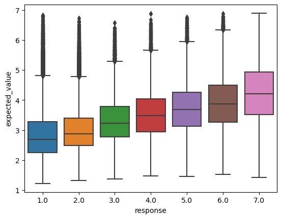
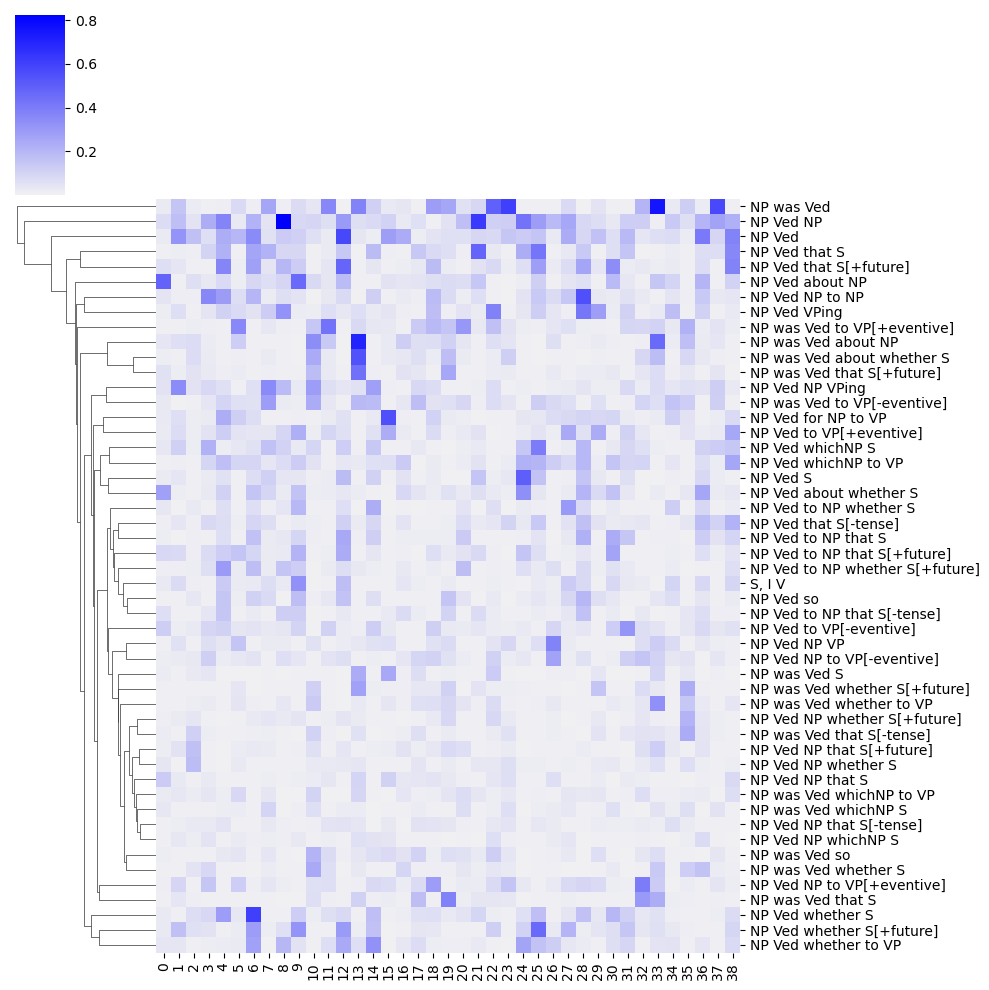
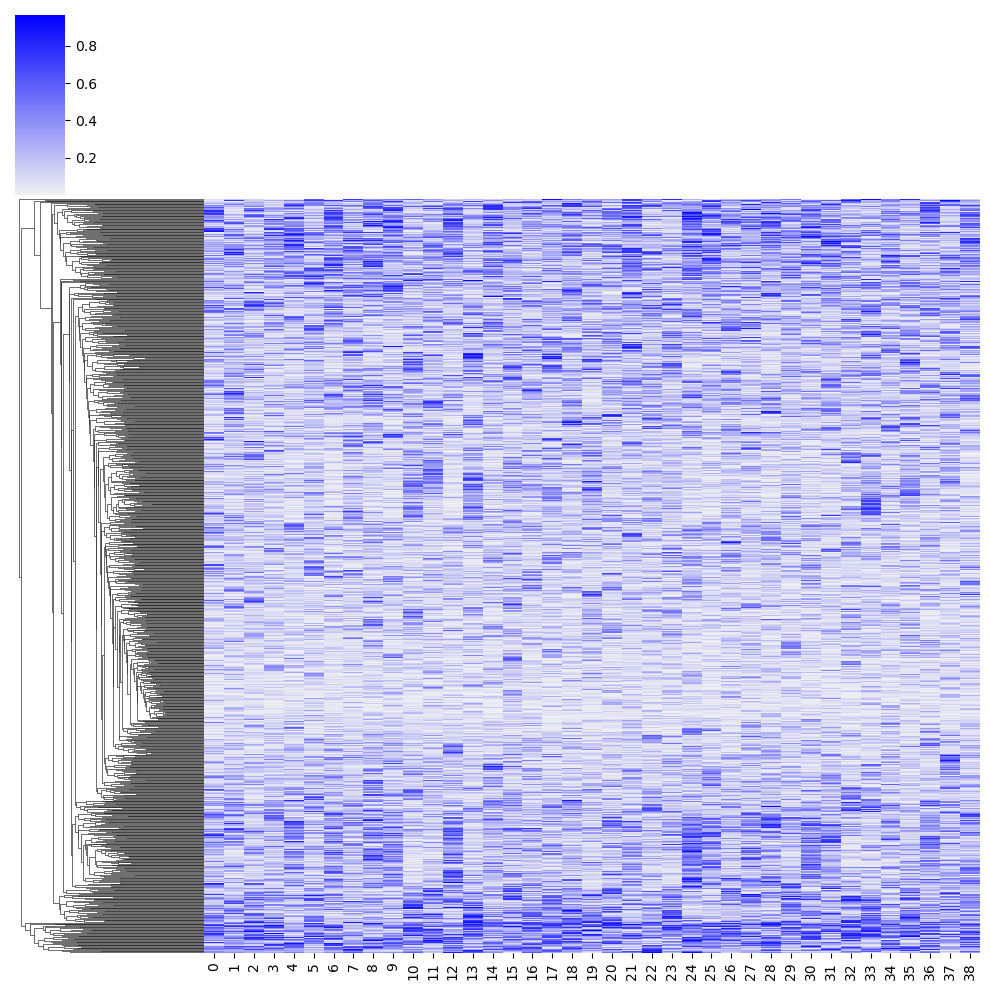

Define SelectionData
from dataclasses import dataclass
from numpy import ndarray
@dataclass
class SelectionData:
verb: ndarray
frame: ndarray
subj: ndarray
resp: ndarrayOur aim in this section will be to evaluate different assumptions about constraints on the relationship between syntactic and semantic types.
from dataclasses import dataclass
from numpy import ndarray
@dataclass
class SelectionData:
verb: ndarray
frame: ndarray
subj: ndarray
resp: ndarray@dataclass
class SelectionModelParametersABC:
n_verb: int
n_frame: int
n_subj: int
n_resp_levels: int
@dataclass
class SelectionModelParameters(SelectionModelParametersABC):
n_component: intimport torch
from torch import Tensor
torch.set_default_tensor_type(torch.DoubleTensor)
def ordered_logistic_likelihood(value: Tensor, jumps: Tensor, center: bool = True) -> Tensor:
"""Compute the ordered logistic likelihood given a value
Parameters
----------
value
The value to compute the likelihood for
(shape: batch_size)
jumps
The distance between cutpoints
(shape: batch_size x number of response levels - 1)
Returns
-------
log_likelihood
the ordered logistic log-likelihood
"""
cutpoints = torch.cumsum(jumps, axis=1)
if center:
cutpoints = cutpoints - cutpoints.mean(1)[:,None]
cdfs = torch.sigmoid(cutpoints - value[:,None])
low_prob = torch.cat(
[torch.zeros([cdfs.shape[0], 1]), cdfs],
axis=1
)
high_prob = torch.cat(
[cdfs, torch.ones([cdfs.shape[0], 1])],
axis=1
)
return high_prob - low_probfrom typing import Optional
from torch import manual_seed
from torch import randn
from torch.nn import Module
ZERO = 1e-5
ONE = 1. - ZERO
class SelectionModel(Module):
parameter_class = SelectionModelParameters
data_class = SelectionData
def __init__(self, parameters: SelectionModelParameters):
super().__init__()
self.model_parameters = parameters
# prior parameters
self.verb_component_prior_mean_aux = torch.nn.Parameter(
randn(parameters.n_component),
requires_grad=True
)
self.frame_component_prior_mean_aux = torch.nn.Parameter(
randn(parameters.n_component),
requires_grad=True
)
self.verb_component_prior_precision_aux = torch.nn.Parameter(
randn(parameters.n_component),
requires_grad=True
)
self.frame_component_prior_precision_aux = torch.nn.Parameter(
randn(parameters.n_component),
requires_grad=True
)
# latent matrices
self.verb_component_aux = torch.nn.Parameter(
randn([
parameters.n_verb, parameters.n_component
]),
requires_grad=True
)
self.frame_component_aux = torch.nn.Parameter(
randn([
parameters.n_frame, parameters.n_component
]),
requires_grad=True
)
# likelihood parameters
self.log_jumps = torch.nn.Parameter(
torch.ones([
parameters.n_subj, parameters.n_resp_levels-1
]),
requires_grad=True
)
def forward(self, data: SelectionData):
# compute the verb frame probabilities
verb_frame_prob = self.verb_frame_prob(
data.verb, data.frame,
clamp=True
)
# apply a logit to those probabilities
verb_frame_logodds = torch.log(verb_frame_prob) -\
torch.log(1. - verb_frame_prob)
# compute the jumps for each subject
jumps = self.jumps[data.subj]
# return the ordered logistic probabilities
return ordered_logistic_likelihood(
verb_frame_logodds, jumps
)
def verb_frame_prob(
self,
verb_idx: Optional[ndarray] = None,
frame_idx: Optional[ndarray] = None,
clamp: bool = False
) -> Tensor:
if verb_idx is not None or frame_idx is not None:
acc = 1. - torch.prod(
1. - self.verb_component_prob[verb_idx,:] *
self.frame_component_prob[frame_idx,:],
axis=1
).clamp(ZERO, ONE)
elif verb_idx is None and frame_idx is not None:
acc = 1. - torch.prod(
1. - self.verb_component_prob[:,None,:] *
self.frame_component_prob[:,frame_idx,:],
axis=2
).clamp(ZERO, ONE)
elif verb_idx is not None and frame_idx is None:
acc = 1. - torch.prod(
1. - self.verb_component_prob[verb_idx,None,:] *
self.frame_component_prob[None,:,:],
axis=2
).clamp(ZERO, ONE)
else:
acc = 1. - torch.prod(
1. - self.verb_component_prob[:,None,:] *
self.frame_component_prob[None,:,:],
axis=2
)
if clamp:
return acc.clamp(ZERO, ONE)
else:
return acc
@property
def verb_component_prob(self) -> Tensor:
return torch.sigmoid(self.verb_component_aux)
@property
def frame_component_prob(self) -> Tensor:
return torch.sigmoid(self.frame_component_aux)
@property
def jumps(self):
return torch.exp(self.log_jumps)
@property
def verb_component_prior_mean(self):
return torch.sigmoid(self.verb_component_prior_mean_aux)
@property
def frame_component_prior_mean(self):
return torch.sigmoid(self.frame_component_prior_mean_aux)
@property
def verb_component_prior_precision(self):
return torch.exp(self.verb_component_prior_precision_aux)
@property
def frame_component_prior_precision(self):
return torch.exp(self.frame_component_prior_precision_aux)from pandas import CategoricalDtype, Series, DataFrame
def hash_series(series: Series, categories: Optional[list[str]] = None, indexation: int=1) -> tuple[ndarray, ndarray]:
"""Hash a series to numeric codes
Parameters
----------
column
The series to hash
index
The starting index (defaults to 1)
"""
# enforce 0- or 1-indexation
if indexation not in [0, 1]:
raise ValueError("Must choose either 0- or 1-indexation.")
# convert the series to a category
if categories is None:
category_series = series.astype("category")
else:
cat_type = CategoricalDtype(categories=categories)
category_series = series.astype(cat_type)
# get the hash
hash_map = category_series.cat.categories.values
# map to one-indexed codes
hashed_series = (category_series.cat.codes + indexation).values
return hash_map, hashed_seriestorchAs mentioned in the last section, we’ll estimate the parameters contained in our SelectionModel, StructuredSelectionModel, and ConstrainedStructuredSelectionModel Modules using a trainer class. This class will do a few things for us.
First, it will format the model hyperparameters and data for consumption by the Module. Across all of our models, the format of the data (SelectionData) will remain the same, though the shape of the objects containing the hyperparameters will differ.
Second, It will compute the (unnormalized) posterior given the current setting of the model parameters contained in the Module. The posterior is unnormalized in the sense that we won’t bother with computing the evidence, since the evidence is not relevant for computing \(\arg_{\boldsymbol\theta}\max p(\boldsymbol\theta \mid \mathbf{x})\), since the evidence \(p(\mathbf{x})\) is a constant relative to \(\boldsymbol\theta\):
\[\arg_{\boldsymbol\theta}\max p(\boldsymbol\theta \mid \mathbf{x}) = \arg_{\boldsymbol\theta}\max \frac{p(\mathbf{x} \mid \boldsymbol\theta)p(\boldsymbol\theta)}{p(\mathbf{x})} = \arg_{\boldsymbol\theta}\max p(\mathbf{x} \mid \boldsymbol\theta)p(\boldsymbol\theta)\]
Finally and most importantly, it will actually conduct gradient descent by computing the gradient \(\nabla p(\boldsymbol\theta \mid \mathbf{x})\) and then taking a step in the direction of the gradient.
All of the trainrs for our Modules will use an abstract base class SelectionModelTrainerABC. Similar to our wrappers for CmdStanModels from Modules 1 and 2, the trainers will (partially) conform to the sklearn API by implementing a fit method that returns the trainer itself.
from abc import ABC, abstractmethod
from numpy import arange, round, sum, abs, mean, inf, random, corrcoef, concatenate
class SelectionModelTrainerABC(ABC):
data_class = SelectionData
@abstractmethod
def construct_model_parameters(self, data: DataFrame) -> SelectionModelParameters:
raise NotImplementedError
def construct_model_data(self, data: DataFrame) -> SelectionData:
frame_hashed, verb_hashed, subj_hashed = self._construct_hashes(data)
model_data = {
"verb": verb_hashed,
"frame": frame_hashed,
"subj": subj_hashed,
"resp": data.response.astype(int).values - 1
}
return self.data_class(**model_data)
def _construct_hashes(self, data: DataFrame):
if hasattr(self, "frame_hash_map"):
_, frame_hashed = hash_series(data.frame, self.frame_hash_map, indexation=0)
else:
self.frame_hash_map, frame_hashed = hash_series(data.frame, indexation=0)
if hasattr(self, "verb_hash_map"):
_, verb_hashed = hash_series(data.verb, self.verb_hash_map, indexation=0)
else:
self.verb_hash_map, verb_hashed = hash_series(data.verb, indexation=0)
if hasattr(self, "subj_hash_map"):
_, subj_hashed = hash_series(data.participant, self.subj_hash_map, indexation=0)
else:
self.subj_hash_map, subj_hashed = hash_series(data.participant, indexation=0)
return frame_hashed, verb_hashed, subj_hashed
def _initialize_model(self, data: DataFrame):
model_parameters = self.construct_model_parameters(data)
return self.model_class(model_parameters)
def _construct_splits(self, data: DataFrame) -> tuple[DataFrame]:
verbs = data.verb.unique()
frames = data.frame.unique()
verb_frame_pairs = [v + "_" + f for v in verbs for f in frames]
n_dev = int(len(verb_frame_pairs) / 10)
verb_frame_pairs_dev = random.choice(verb_frame_pairs, n_dev, replace=False)
dev_indicator = (data.verb + "_" + data.frame).isin(verb_frame_pairs_dev)
data_train = data[~dev_indicator]
data_dev = data[dev_indicator]
return data_train, data_dev
def fit(
self, data: DataFrame, batch_size=1_000, max_epochs:int=10_000,
lr: float = 1e-5, patience: int = 100,
tolerance_loss: float = 1e-5, tolerance_heldout: float = 0.05,
window_size: int = 100, verbosity: int=100, seed: int = 403928
) -> SelectionModelTrainerABC:
manual_seed(seed)
random.seed(seed)
# necessary for initializing hashes that contain all verbs, frames,
# and subjects
self._construct_hashes(data)
data_train, data_dev = self._construct_splits(data)
self.model = self._initialize_model(data_train)
# wrap the dev split responses in a tensor
# this tensor will be used to compute the correlation between
# the models expected value for a response and the actual
# response
target_dev = torch.tensor(data_dev.response.values)
# initialize the optimizer
optimizer = torch.optim.Adam(self.model.parameters(), lr=lr)
# initialize the loss trace
self.loss_trace = [inf]
# initialize the dev-train correlations trace
self.corr_train_trace = []
self.corr_dev_trace = []
# initialize the loss differences trace
loss_diffs_trace = []
# initialize the dev-train correlation differences trace
corr_diffs_trace = []
for e in range(max_epochs):
# shuffle the training data
data_shuffled = data_train.sample(frac=1.)
data_shuffled = data_shuffled.reset_index(drop=True)
# compute the number of batches based on the batch size
n_batches = int(data_shuffled.shape[0]/batch_size)
# zero the total loss for the epoch
epoch_total_loss = 0.
# initialize the list of correlations
correlations_train = []
for i in range(n_batches):
# construct the minibatch
lower_bound = i*batch_size
if i == (n_batches - 1):
upper_bound = data_shuffled.shape[0]
else:
upper_bound = (i+1)*batch_size
data_sub = self.construct_model_data(
data_shuffled.iloc[lower_bound:upper_bound]
)
# wrap the responses in a tensor
target = torch.tensor(data_sub.resp)
# zero out the gradients
optimizer.zero_grad()
# compute the (log-)probabilities for the minibatch
probs = self.model(data_sub)
logprobs = torch.log(probs)
# compute the loss
loss = self.loss_function(logprobs, target)
loss += self._prior_loss()
# compute gradients
loss.backward()
# take a step in the direction of the gradient
optimizer.step()
# compute correlation between expected value and target
expected_value_train = sum(
arange(1, probs.shape[1]+1)[None,:] *
probs.detach().numpy(),
axis=1
)
corr_train = corrcoef(
concatenate([
expected_value_train[None,:],
data_sub.resp[None,:]
], axis=0)
)
correlations_train.append(
corr_train[0,1]
)
# compute total loss
epoch_total_loss += loss.detach().numpy()
# compute the difference between the current and previous loss
loss_diff = self.loss_trace[-1] - epoch_total_loss
loss_diff_scaled = loss_diff/abs(self.loss_trace[-1]) if e else inf
loss_diffs_trace.append(
loss_diff_scaled
)
# save epoch mean loss
self.loss_trace.append(epoch_total_loss)
# compute correlation between exp. value and ratings
# in the dev set
expected_value_dev = self.expected_value(data_dev)
corr_dev = corrcoef(
concatenate([
expected_value_dev[None,:],
data_dev.response.values[None,:]
], axis=0)
)[0,1]
self.corr_dev_trace.append(
corr_dev
)
# compute and save the mean correlation in the train set
correlations_train_mean = mean(correlations_train)
self.corr_train_trace.append(correlations_train_mean)
# compute the difference between the mean train correlation
# and the dev correlation
corr_diffs_trace.append(
correlations_train_mean - corr_dev
)
if verbosity and not e % verbosity:
print(f"Epoch: {e}")
print(f"Loss: {round(epoch_total_loss)}")
print(f"loss improvement: {round(loss_diff_scaled, 7)}")
print(f"Mean train corr.: {round(correlations_train_mean, 2)}")
print(f"Dev corr.: {round(corr_dev, 2)}")
print()
max_window_size = min(len(corr_diffs_trace), window_size)
mean_diff = torch.mean(
torch.tensor(corr_diffs_trace[-max_window_size:])
)
if e > patience and (mean_diff > tolerance_heldout or loss_diff_scaled < tolerance_loss):
if verbosity:
print(f"Epoch: {e}")
print(f"Loss: {round(epoch_total_loss)}")
print(f"loss improvement: {round(loss_diff_scaled, 7)}")
print(f"Mean train corr.: {round(correlations_train_mean, 2)}")
print(f"Dev corr.: {round(corr_dev, 2)}")
print()
break
else:
prev_corr_dev = corr_dev
return self
@abstractmethod
def _prior_loss(self):
raise NotImplementedError
def expected_value(self, data: DataFrame):
model_data = self.construct_model_data(data)
probs = self.model(model_data).detach().numpy()
expected_value = sum(
arange(1, 8)[None,:] * probs,
axis=1
)
return expected_value
def likelihood(self, data: DataFrame):
model_data = self.construct_model_data(data)
probs = self.model(model_data)
return probs[model_data.resp]
def predict(self, data: DataFrame):
model_data = self.construct_model_data(data)
probs = self.model(model_data)
return probs[model_data.resp]SelectionModelTo implement a trainer (SelectionModelTrainer) for our basic SelectionModel, we need to specify three things: (i) how to initialize the SelectionModelTrainer; (ii) how to construct the model parameters; and (iii) how to compute the prior.
from torch.distributions.gamma import Gamma
from torch.distributions.exponential import Exponential
class SelectionModelTrainer(SelectionModelTrainerABC):
parameter_class = SelectionModelParameters
model_class = SelectionModel
def __init__(self, n_component: int):
self.n_component = n_component
self.loss_function = torch.nn.CrossEntropyLoss(reduction="sum")
def construct_model_parameters(self, data: DataFrame) -> SelectionModelParametersABC:
model_parameters = {
"n_verb": self.verb_hash_map.shape[0],
"n_frame": self.frame_hash_map.shape[0],
"n_subj": self.subj_hash_map.shape[0],
"n_resp_levels": 7,
"n_component": self.n_component,
}
return self.parameter_class(**model_parameters)
def _prior_loss(self):
jumps = self.model.jumps
loss = (jumps / jumps.mean(0)[None,:]).mean()
return lossimport os
from pandas import read_csv
def load_data(fname: str, verbose: bool = True) -> DataFrame:
# read the raw data skipping comment rows at the beginning
data = read_csv(fname, sep="\t")
if verbose:
n_datapoints = data.shape[0]
print(f"The full dataset has {n_datapoints} datapoints.")
# remove non-native speakers
if "nativeenglish" in data.columns:
data = data.query("nativeenglish")
if verbose:
n_datapoints_native = data.shape[0]
print(f"Removing {n_datapoints - n_datapoints_native} "
"responses from nonnative speakers.")
# remove NaN judgments
data = data.query("~response.isnull()")
if verbose:
n_datapoints_nonnull = data.shape[0]
print(f"Removing {n_datapoints_native - n_datapoints_nonnull} NA responses.")
return data
data_dir = "./data/mega-acceptability-v1/"
data = load_data(os.path.join(data_dir, "mega-acceptability-v1.tsv"))The full dataset has 250000 datapoints.
Removing 600 responses from nonnative speakers.
Removing 10 NA responses.selection_model = SelectionModelTrainer(39)
selection_model.fit(data)To get a sense for how well this model fits the data, we can compare the expected response it assigns to each datapoint to the actual response.
from scipy.stats import spearmanr
from seaborn import boxplot
data["expected_value"] = selection_model.expected_value(data).data
_ = boxplot(data, x="response", y="expected_value")
spearmanr(data[["response", "expected_value"]])SignificanceResult(statistic=0.5189593508120506, pvalue=0.0)
We see these expected values have a correlation relatively near the level that White and Rawlins (2020) report that participants agree with each other (mean Spearman \(\rho=0.55\)).
frame_component_prob = DataFrame(
selection_model.model.frame_component_prob.data,
index=selection_model.frame_hash_map
)from seaborn import clustermap, color_palette
clustermap(
frame_component_prob,
cmap=color_palette("light:b", as_cmap=True),
yticklabels=True,
col_cluster=False
)
verb_component_prob = DataFrame(
selection_model.model.verb_component_prob.data,
index=selection_model.verb_hash_map
)_ = clustermap(
verb_component_prob,
cmap=color_palette("light:b", as_cmap=True),
yticklabels=False,
col_cluster=False,
)/opt/conda/lib/python3.10/site-packages/seaborn/matrix.py:560: UserWarning: Clustering large matrix with scipy. Installing `fastcluster` may give better performance.
warnings.warn(msg)
To evaluate this model’s ability to capture temporal orientation, we’ll ask how well we can predict the judgments in MegaOrientation using the probabilities contained in \(\boldsymbol\Lambda\) and \(\boldsymbol\Pi\) as predictors in a mixed effects model. We’ll use the implementation we developed in Module 1.
import patsy
from numpy import array
from cmdstanpy import CmdStanModel
from arviz import InferenceData
@dataclass
class MixedEffectsData:
N_resp: int # number of responses
N_subj: int # number of subjects
N_resp_levels: int # number of possible likert scale acceptability judgment responses
subj: ndarray # subject who gave response n
resp: ndarray # likert scale acceptability judgment responses
N_fixed: int # number of fixed predictors
fixed_predictors: ndarray # predictors (length and dependency type) including intercept
N_item: int # number of items
N_by_item: int # number of random by-item predictors
by_item_predictors: ndarray # by-item predictors (length and dependency type) including intercept
N_by_subj: int # number of random by-subject predictors
by_subj_predictors: ndarray # by-subject predictors (length and dependency type) including intercept
item: ndarray # item corresponding to response n
class MixedEffectsModel:
stan_file = "../island-effects/models/mixed-effects-model/mixed-effects-model.stan"
data_class = MixedEffectsData
def __init__(
self, fixed_formula: str, by_subj_formula: str, by_item_formula: str,
):
self.model = CmdStanModel(stan_file=self.stan_file)
self.fixed_formula = fixed_formula
self.by_subj_formula = by_subj_formula
self.by_item_formula = by_item_formula
def _validate_data(self):
self.data_class(**self.model_data)
def construct_model_data(self, data: DataFrame):
self.fixed_predictors = patsy.dmatrix(
self.fixed_formula, data, return_type="dataframe"
)
self.by_subj_predictors = patsy.dmatrix(
self.by_subj_formula, data, return_type="dataframe"
)
self.by_item_predictors = patsy.dmatrix(
self.by_item_formula, data, return_type="dataframe"
)
self.subj_hash_map, subj_hashed = hash_series(data.participant)
self.item_hash_map, item_hashed = hash_series(data.sentence)
model_data = {
"N_resp": data.shape[0],
"N_subj": self.subj_hash_map.shape[0],
"N_resp_levels": 7,
"subj": subj_hashed,
"resp": data.response.astype(int).values,
"N_fixed": self.fixed_predictors.shape[1],
"fixed_predictors": self.fixed_predictors.values,
"N_by_subj": self.by_subj_predictors.shape[1],
"by_subj_predictors": self.by_subj_predictors.values,
"N_item": self.item_hash_map.shape[0],
"N_by_item": self.by_item_predictors.shape[1],
"by_item_predictors": self.by_item_predictors.values,
"item": item_hashed
}
return model_data
def fit(
self,
data: DataFrame,
save_dir: Optional[str] = None,
verbose: bool = False,
map_initialization: bool = True,
seed: int = 50493,
**kwargs
) -> InferenceData:
if verbose:
print("Constructing model data...")
self.model_data = self.construct_model_data(data)
self._validate_data()
if map_initialization:
if verbose:
print("Fitting model with MAP initialization...")
map_estimate = self._compute_map_estimate(seed)
if "inits" in kwargs:
# inits passed to fit() should override MAP
map_estimate.update(kwargs["inits"])
kwargs["inits"] = map_estimate
elif verbose:
print("Fitting model...")
# sample from the posterior starting at the MAP
self.raw_model_fit = self.model.sample(
data=self.model_data,
**kwargs
)
if save_dir is not None:
if verbose:
print("Saving model...")
self.save(save_dir)
if verbose:
print("Running MCMC diagnostics...")
print()
print(self.diagnose())
return self
def _compute_map_estimate(self, seed:int):
# compute MAP fit
self.map_model_fit = self.model.optimize(
data=self.model_data,
seed=seed,
algorithm="lbfgs",
tol_obj=1.
)
map_estimate = self.map_model_fit.stan_variables()
for vname, v in map_estimate.items():
if "cov" in vname and not hasattr(v, "shape"):
map_estimate[vname] = array([[v]])
return map_estimate
@property
def model_fit(self):
return arviz.from_cmdstanpy(self.raw_model_fit)
def save(self, save_dir: str = "."):
self.raw_model_fit.save_csvfiles(save_dir)
@classmethod
def from_csv(cls, path: str, **kwargs):
model = cls(**kwargs)
model.raw_model_fit = cmdstanpy.from_csv(path)
def diagnose(self):
return self.raw_model_fit.diagnose()data_dir = "./data/mega-orientation-v1.1/"
data_orientation = load_data(os.path.join(data_dir, "mega-orientation-v1.1.tsv"))
data_orientation["frame"] = data_orientation.frame.str.replace("_", "V")The full dataset has 44160 datapoints.
Removing 0 responses from nonnative speakers.
Removing 0 NA responses.from pandas import merge
data_orientation_with_comps = merge(
merge(
data_orientation,
verb_component_prob.rename(columns=lambda x: f"verbcomp{x}"),
left_on="verb", right_index=True
),
frame_component_prob.rename(columns=lambda x: f"framecomp{x}"),
left_on="frame", right_index=True
)
frame_comp_form = " + ".join(frame_component_prob.columns.map(lambda x: f"framecomp{x}"))
verb_comp_form = " + ".join(verb_component_prob.columns.map(lambda x: f"verbcomp{x}"))
selection_model_validation = MixedEffectsModel(
fixed_formula=f"~ ({verb_comp_form} + {frame_comp_form}) * orientation",
by_subj_formula=f"~ 1",
by_item_formula="~ 1",
)
selection_model_validation.fit(data_orientation_with_comps)StructuredSelectionModelfrom collections import OrderedDict
frame_to_constituents = OrderedDict({
'NP was Ved whichNP to VP': {
("NP_subj", "NP_obj", "whichNP to VP"),
("NP_obj", "whichNP to VP")
},
'NP Ved for NP to VP': {
("NP_subj", "for NP to VP"),
("NP_subj", "PP_for", "to VP")
},
'NP Ved NP to VP[+eventive]': {
("NP_subj", "NP to VP[+eventive]"),
("NP_subj", "NP_obj", "to VP[+eventive]")
},
'NP was Ved whether to VP': {
("NP_subj", "NP_obj", "whether to VP"),
("NP_obj", "whether to VP")
},
'NP Ved to VP[+eventive]': {
("NP_subj", "to VP[+eventive]")
},
'NP Ved NP to NP': {
("NP_subj", "NP_obj", "NP_iobj")
},
'NP Ved NP that S': {
("NP_subj", "NP_obj", "that S")
},
'NP was Ved about NP': {
("NP_subj", "NP_obj", "about NP") ,
("NP_obj", "about NP")
},
'NP was Ved that S[-tense]': {
("NP_subj", "NP_obj", "S[-tense]") ,
("NP_obj", "S[-tense]")
},
'NP Ved to NP that S[+future]': {
("NP_subj", "NP_iobj", "that S[+future]")
},
'NP Ved whether to VP': {
("NP_subj", "whether to VP")
},
'NP Ved whichNP to VP': {
("NP_subj", "whichNP to VP")
},
'NP Ved about whether S': {
("NP_subj", "about whether S")
},
'NP Ved whichNP S': {
("NP_subj", "whichNP S")
},
'NP Ved that S[-tense]': {
("NP_subj", "that S[-tense]")
},
'NP Ved whether S[+future]': {
("NP_subj", "whether S[+future]")
},
'NP was Ved that S[+future]': {
("NP_subj", "NP_obj", "that S[+future]") ,
("NP_obj", "that S[+future]")
},
'NP Ved to NP whether S': {
("NP_subj", "NP_iobj", "whether S")
},
'NP Ved': {
("NP_subj",)
},
'NP Ved NP to VP[-eventive]': {
("NP_subj", "NP to VP[-eventive]"),
("NP_subj", "NP_obj", "to VP[-eventive]"),
("NP_subj", "NP to VP[-eventive]")
},
'NP was Ved so': {
("NP_obj", "so"),
("NP_subj", "NP_obj", "so")
},
'NP Ved so': {
("NP_subj", "so")
},
'NP Ved NP that S[+future]': {
("NP_subj", "NP_obj", "that S[+future]")
},
'NP Ved NP whether S[+future]': {
("NP_subj", "NP_obj", "whether S[+future]")
},
'NP Ved to NP whether S[+future]': {
("NP_subj", "NP_iobj", "whether S[+future]")
},
'NP was Ved that S': {
("NP_obj", "that S"),
("NP_subj", "NP_obj", "that S")
},
'NP Ved NP whether S': {
("NP_subj", "NP_obj", "whether S")
},
'NP was Ved whether S': {
("NP_obj", "whether S"),
("NP_subj", "NP_obj", "whether S")
},
'NP was Ved to VP[-eventive]': {
("NP_obj", "to VP[-eventive]"),
("NP_subj", "NP_obj", "to VP[-eventive]"),
("NP_subj", "NP to VP[-eventive]")
},
'NP Ved NP VP': {
("NP_subj", "NP_obj", "VP"),
("NP_subj", "NP VP")
},
'NP Ved VPing': {
("NP_subj", "VPing")
},
'NP was Ved to VP[+eventive]': {
("NP_obj", "to VP[+eventive]"),
("NP_subj", "NP_obj", "to VP[+eventive]"),
("NP_subj", "NP to VP[+eventive]")
},
'NP Ved NP that S[-tense]': {
("NP_subj", "NP_obj", "that S[-tense]")
},
'NP Ved that S': {
("NP_subj", "that S")
},
'NP was Ved': {
("NP_obj",),
("NP_subj", "NP_obj")
},
'NP Ved S': {
("NP_subj", "S")
},
'NP Ved that S[+future]': {
("NP_subj", "that S[+future]")
},
'NP was Ved about whether S': {
("NP_subj", "NP_obj", "about whether S") ,
("NP_obj", "about whether S")
},
'NP Ved NP': {
("NP_subj", "NP_obj")
},
'NP Ved NP VPing': {
("NP_subj", "NP_obj", "VPing"),
("NP_subj", "NP VPing")
},
'NP Ved NP whichNP S': {
("NP_subj", "NP_obj", "whichNP S")
},
'NP Ved about NP': {
("NP_subj", "about NP")
},
'NP was Ved S': {
("NP_subj", "NP_obj", "S") ,
("NP_obj", "S")
},
'NP Ved to NP that S': {
("NP_subj", "NP_iobj", "that S"),
},
'NP was Ved whether S[+future]': {
("NP_subj", "NP_obj", "whether S[+future]") ,
("NP_obj", "whether S[+future]")
},
'NP Ved whether S': {
("NP_subj", "whether S")
},
'NP was Ved whichNP S': {
("NP_subj", "NP_obj", "whichNP S") ,
("NP_obj", "whichNP S")
},
'NP Ved to NP that S[-tense]': {
("NP_subj", "NP_iobj", "that S[-tense]")
},
'NP Ved to VP[-eventive]': {
("NP_subj", "to VP[-eventive]")
}
})
data = data[data.frame.isin(frame_to_constituents)]from numpy import array, zeros, where, isin
from xarray import DataArray
constituents = array(sorted({
c
for tups in frame_to_constituents.values()
for t in tups
for c in t
}))
max_parses = max(
len(t)
for tups in frame_to_constituents.values()
for t in tups
)
frame_to_parse_constituent_indicators = zeros([
len(frame_to_constituents), max_parses, len(constituents)
])
for i, (f, parses) in enumerate(frame_to_constituents.items()):
for j, parse in enumerate(parses):
for k, const in enumerate(parse):
const_idx = where(constituents == const)[0][0]
frame_to_parse_constituent_indicators[i,j,const_idx] = 1.
frame_to_parse_constituent_indicators = DataArray(
frame_to_parse_constituent_indicators,
dims=["frame", "parse", "constituent"],
coords={
"frame": list(frame_to_constituents),
"parse": list(range(max_parses)),
"constituent": constituents,
}
)from numpy import prod
from torch import tensor
@dataclass
class StructuredSelectionModelParameters(SelectionModelParametersABC):
frame_to_parse_constituent_indicators: ndarray
n_primitive_semantic_types: int
n_primitive_syntactic_types: int
max_complex_type_size: int
class StructuredSelectionModel(Module):
parameter_class = StructuredSelectionModelParameters
data_class = SelectionData
def __init__(self, parameters: StructuredSelectionModelParameters):
super().__init__()
self.model_parameters = parameters
# initialize the verb-complex semantic type probabilities
self._initialize_verb_complex_semantic_type()
# initialize the frame-complex syntactic type probabilities
self._initialize_frame_complex_syntactic_type()
# initialize the semantic-syntactic primitive type map
self._initialize_primitive_type_map()
# initialize the syntactic primitive type-constituent map
syntactic_primitive_type_constituent_map_aux = torch.zeros([
parameters.n_primitive_syntactic_types,
parameters.frame_to_parse_constituent_indicators.shape[2]
])
self.syntactic_primitive_type_constituent_map_aux = torch.nn.Parameter(
syntactic_primitive_type_constituent_map_aux,
requires_grad=True
)
# initialize the cutpoint distances
self.log_jumps = torch.nn.Parameter(
torch.ones([
parameters.n_subj, parameters.n_resp_levels-1
]),
requires_grad=True
)
def _initialize_verb_complex_semantic_type(self):
verb_shape = (self.model_parameters.n_verb,) +\
self.complex_semantic_type_shape
self.verb_complex_semantic_type_aux = torch.nn.Parameter(
torch.randn(verb_shape),
requires_grad=True
)
def _initialize_frame_complex_syntactic_type(self):
frame_shape = (self.model_parameters.n_frame,) +\
self.complex_syntactic_type_shape
self.frame_complex_syntactic_type_aux = torch.nn.Parameter(
torch.randn(frame_shape),
requires_grad=True
)
def _initialize_primitive_type_map(self):
primitive_type_map_aux = randn([
self.model_parameters.n_primitive_semantic_types,
self.model_parameters.n_primitive_syntactic_types + 1
])
self.primitive_type_map_aux = torch.nn.Parameter(
primitive_type_map_aux,
requires_grad=True
)
@property
def complex_semantic_type_shape(self):
return (self.model_parameters.n_primitive_semantic_types+1,) *\
self.model_parameters.max_complex_type_size
@property
def complex_syntactic_type_shape(self):
return (self.model_parameters.n_primitive_syntactic_types+1,)*\
self.model_parameters.max_complex_type_size
def forward(self, data: SelectionData):
verb_frame_prob = self.verb_frame_prob(data.verb, data.frame)
verb_frame_logodds = torch.log(verb_frame_prob) - torch.log(1. - verb_frame_prob)
jumps = self.jumps[data.subj]
return ordered_logistic_likelihood(
verb_frame_logodds, jumps
)
def verb_frame_prob(self, verb_idx: ndarray, frame_idx: ndarray) -> Tensor:
n_verb = self.model_parameters.n_verb
n_frame = self.model_parameters.n_frame
verb_shape = self.complex_semantic_type_shape +\
(1,) * len(self.complex_syntactic_type_shape)
frame_shape = (1,) * len(self.complex_semantic_type_shape) +\
self.complex_syntactic_type_shape
if verb_idx.shape != frame_idx.shape:
raise ValueError
else:
resp_shape = verb_idx.shape[0]
# shape for verbs and frames to complex type signatures
verb_shape = (resp_shape,) + verb_shape
frame_shape = (resp_shape,) + frame_shape
# shape with response dimension inserted into map
synsem_map_shape = (1,) +\
self.complex_semantic_type_shape +\
self.complex_syntactic_type_shape
# shape for broadcasting syn map
syn_map_shape = (resp_shape,) +\
(1,) * self.model_parameters.max_complex_type_size +\
self.complex_syntactic_type_shape
# shape for computing prod on all but the reponse dimension
flat_shape = (resp_shape, prod(synsem_map_shape))
p = self.verb_complex_semantic_type[verb_idx].view(verb_shape) *\
self.frame_complex_syntactic_type[frame_idx].view(frame_shape) *\
self.complex_synsem_type_map.view(synsem_map_shape) *\
self.complex_syn_type_map[frame_idx].view(syn_map_shape)
acc = 1. - (1. - p.view(flat_shape)).prod(axis=1)
acc = acc.clamp(min=ZERO, max=ONE)
return acc
@property
def verb_complex_semantic_type(self) -> Tensor:
return torch.sigmoid(self.verb_complex_semantic_type_aux)
@property
def frame_complex_syntactic_type(self) -> Tensor:
return torch.sigmoid(self.frame_complex_syntactic_type_aux)
@property
def primitive_type_map(self) -> Tensor:
prob = torch.sigmoid(
self.primitive_type_map_aux
)
# the 0th primitive type is the null primitive type and null
# primitive types should only map onto each other
null_map = torch.zeros([
1,
self.model_parameters.n_primitive_syntactic_types + 1,
])
null_map[0,0] = 1.0
return torch.cat([null_map, prob], axis=0)
@property
def complex_synsem_type_map(self):
# only want to compute the transformation implicit in the
# property once
primitive_type_map = self.primitive_type_map
# the final shape of the complex type map
final_shape = primitive_type_map.shape *\
self.model_parameters.max_complex_type_size
shape = (primitive_type_map.shape[0],) +\
(1,) * (self.model_parameters.max_complex_type_size - 1) +\
(primitive_type_map.shape[1],) +\
(1,) * (self.model_parameters.max_complex_type_size - 1)
m = primitive_type_map.view(shape)
for i in range(1, self.model_parameters.max_complex_type_size):
shape = (1,) * i +\
(primitive_type_map.shape[0],) +\
(1,) * (self.model_parameters.max_complex_type_size - (i + 1)) +\
(1,) * i +\
(primitive_type_map.shape[1],) +\
(1,) * (self.model_parameters.max_complex_type_size - (i + 1))
m = m * primitive_type_map.view(shape)
return m
@property
def complex_syn_type_map(self):
parse_constituent_indicators = tensor(
self.model_parameters.frame_to_parse_constituent_indicators
)
primitive_type_map = self.syntactic_primitive_type_constituent_map.transpose(1,0)
# frame x parse x constituent type x primitive type^max_size
indicators_shape = parse_constituent_indicators.shape +\
(1,) * self.model_parameters.max_complex_type_size
map_shape = (1,1,) +\
primitive_type_map.shape +\
(1,) * (self.model_parameters.max_complex_type_size - 1)
m = 1. - primitive_type_map.view(map_shape) *\
parse_constituent_indicators.view(indicators_shape)
for i in range(1, self.model_parameters.max_complex_type_size):
map_shape = (1,1,primitive_type_map.shape[0]) +\
(1,) * i +\
primitive_type_map.shape[1:] +\
(1,) * (self.model_parameters.max_complex_type_size - (i+1))
m = m * (1. - primitive_type_map.view(map_shape) *\
parse_constituent_indicators.view(indicators_shape))
prob = 1. - torch.prod(
1. - torch.prod(
(1.-parse_constituent_indicators.view(indicators_shape)) +
1. - m,
axis=2
), axis=1
)
return prob
@property
def syntactic_primitive_type_constituent_map(self):
prob = torch.sigmoid(
self.syntactic_primitive_type_constituent_map_aux
)
# the 0th primitive type is the null primitive type and null
# primitive types should not map onto any constitutent, we do
# this by multiplying by a special mask
null_map = torch.zeros([
1,
self.model_parameters.frame_to_parse_constituent_indicators.shape[2]
])
return torch.cat([null_map, prob], axis=0)
@property
def jumps(self):
return torch.exp(self.log_jumps)class ConstrainedStructuredSelectionModel(StructuredSelectionModel):
def _initialize_primitive_type_map(self):
primitive_type_rank_sem_aux = randn([
self.model_parameters.n_primitive_semantic_types
])
self.primitive_type_rank_sem_aux = torch.nn.Parameter(
primitive_type_rank_sem_aux,
requires_grad=True
)
primitive_type_rank_syn_aux = randn([
self.model_parameters.n_primitive_syntactic_types
])
self.primitive_type_rank_syn_aux = torch.nn.Parameter(
primitive_type_rank_syn_aux,
requires_grad=True
)
self.nonnull_sem_to_null_syn_aux = torch.nn.Parameter(
randn(self.model_parameters.n_primitive_semantic_types),
requires_grad=True
)
self.type_rank_log_jumps = torch.nn.Parameter(
randn(
min(
self.model_parameters.n_primitive_syntactic_types - 1,
self.model_parameters.n_primitive_syntactic_types - 1
)
),
requires_grad=True
)
@property
def primitive_type_map(self) -> Tensor:
rank_jumps = torch.exp(self.type_rank_log_jumps)
rank_cuts = torch.cumsum(rank_jumps, axis=0) - rank_jumps[0]
prob_sem = ordered_logistic_likelihood(
self.primitive_type_rank_sem_aux,
rank_cuts[None,:]
)
prob_syn = ordered_logistic_likelihood(
self.primitive_type_rank_syn_aux,
rank_cuts[None,:]
)
prob_prim = (prob_sem[:,None,:] * prob_syn[None,:,:]).sum(2)
null_sem_to_nonnull_syn = torch.zeros([
1,
self.model_parameters.n_primitive_syntactic_types + 1,
])
null_sem_to_nonnull_syn[0,0] = 1.0
nonnull_sem_to_null_syn = torch.sigmoid(
self.nonnull_sem_to_null_syn_aux
)
# the 0th primitive type is the null primitive type and null
# primitive types should only map onto each other, we do this
# by multiplying by a special mask
prob = torch.cat([
nonnull_sem_to_null_syn[:,None],
prob_prim
], axis=1)
return torch.cat([null_sem_to_nonnull_syn, prob], axis=0)class StructuredSelectionModelTrainer(SelectionModelTrainer):
parameter_class = StructuredSelectionModelParameters
model_class = StructuredSelectionModel
def __init__(
self,
n_primitive_semantic_types: int,
n_primitive_syntactic_types: int,
max_complex_type_size: int,
frame_to_parse_constituent_indicators: DataArray
):
self.n_primitive_semantic_types = n_primitive_semantic_types
self.n_primitive_syntactic_types = n_primitive_syntactic_types
self.max_complex_type_size = max_complex_type_size
self.frame_to_parse_constituent_indicators = frame_to_parse_constituent_indicators
self.nonparametric = False
self.alpha = 1.
self.beta = 1.
self.loss_function = torch.nn.CrossEntropyLoss()
def construct_model_parameters(self, data: DataFrame) -> StructuredSelectionModelParameters:
model_parameters = {
"n_verb": self.verb_hash_map.shape[0],
"n_frame": self.frame_hash_map.shape[0],
"n_subj": self.subj_hash_map.shape[0],
"n_resp_levels": 7,
"n_primitive_semantic_types": self.n_primitive_semantic_types,
"n_primitive_syntactic_types": self.n_primitive_syntactic_types,
"max_complex_type_size": self.max_complex_type_size,
"frame_to_parse_constituent_indicators": self.frame_to_parse_constituent_indicators.loc[self.frame_hash_map].values
}
return self.parameter_class(**model_parameters)structured_selection_model_trainer = StructuredSelectionModelTrainer(3,3,3,frame_to_parse_constituent_indicators)
structured_selection_model_trainer.fit(data, verbosity=1, tolerance_loss=1e-6)ConstrainedStructuredSelectionModelclass ConstrainedStructuredSelectionModelTrainer(StructuredSelectionModelTrainer):
model_class = ConstrainedStructuredSelectionModelconstrained_structured_selection_model_trainer = ConstrainedStructuredSelectionModelTrainer(3, 3, 3, frame_to_parse_constituent_indicators)
constrained_structured_selection_model_trainer.fit(data, verbosity=1, tolerance_loss=1e-6)